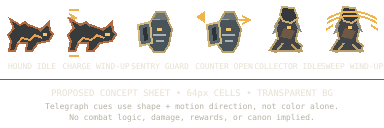
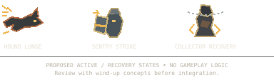

PROPOSED — NOT GAMEPLAY
Ashen March Enemy Telegraphs
Static asset review for design and renderer feasibility. This page does not implement combat, attack timing, hitboxes, damage, XP, loot, or character unlocks. Cues use silhouette and directional marks; color is supplementary.
Wind-up / guard concepts


Review gates
- Confirm all three enemy silhouettes are distinguishable at 320–430 CSS px.
- Check wind-up, active, and recovery states are not visually confused.
- Verify reduced-motion users receive persistent, readable telegraph cues.
- Check contrast against both dark and lighter backgrounds.
- Do not integrate until Alpha/Beta and Founder review.